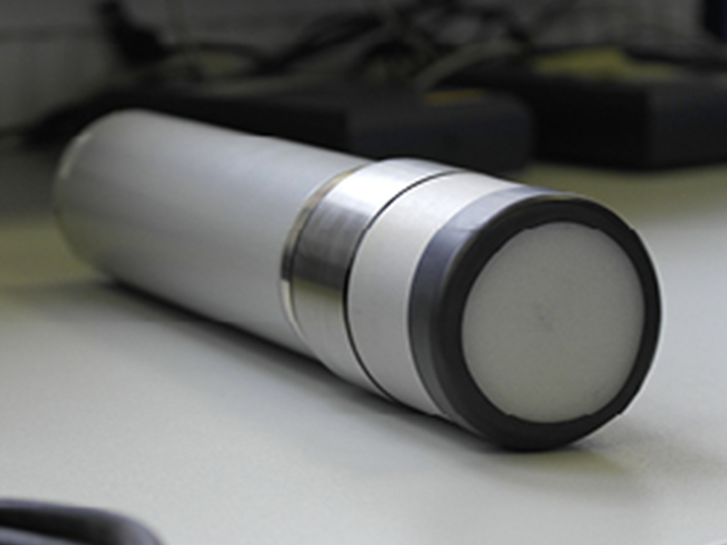

GAMMA DETECTORS
Gamma Detector GSP02
The "All in One" Gammaspektrum Detector
Spectroscopic detection of gamma radiation and isotope identification (nuclide analysis).
Our GSP02 Gamma Spectrum Detector is a Scintillator Radiation Detector for measuring the Nuclid Specific ambient Dose equivalent and, due to the possibility of incorporation, various scintillators, such as NaI(Tl) or Labr3(Ce), provide the appropriate configurations to the requirements.
Its ruggedness, reliability, measurement sensitivity and accuracy due to the large measurement range and its ability to operate in a very wide temperature range make the Gamma Spectrum Detector GSP02 the ideal instrument for gamma-ray spectroscopic detection and in situ isotope identification.

The "All in On" gamma spectrum detector, type GSP02 includes a NaI(Tl) or LaBr3(Ce) scintillator (others on request) with digitally regulated HV amplifier, 1k MCA, continuous automatic energy calibration in the full temperature range, communication via RS232/485/422, USB and Internet.
The following measurements can be carried out:- Measuring radioactivity of the gamma radiation in the quantity of "ambient dose equivalent rate" [H*(10)]
- Spectroscopic detection of gamma radiation with NaI(Tl) or LaBr3(Ce) scintillator
- In situ isotope identification
- Continuous evaluation of the gamma spectra
- Isotope identification from an isotope library
- Isotope-based alarm management
For maximum reliability, our GSP02 uses continuous automatic power and efficiency calibration via a built-in 40K source to prevent false data and alarms.
- Large measuring range, from 10 nSv/h to 100 μSv/h (depending on scintillator) and up to 10 Sv/h with GM extension.
- Wide temperature range, from –30°C to +60°C
Wide range of applications:
- Measuring radioactivity of the gamma radiation in the quantity of "ambient dose equivalent rate" [H*(10)]
- Spectroscopic detection of gamma radiation with NaI(Tl) or LaBr3(Ce) scintillator
- In situ isotope identification
- Continuous evaluation of the gamma spectra
- Isotope identification from an isotope library
- Isotope-based alarm management
Scintillator detector
The GSP02 can be configured to suit virtually any requirement by selecting NaI(Tl) or LaBr3(Ce) or other scintillators of various sizes. Compared to HPGe scintillators it is cheaper, more user-friendly and much smaller in size and weight. The GSP02 provides very good and above all fast results with only a small reduction in results compared to an HPGe scintillator and is therefore the first choice for many applications.
Large measuring range
This allows the gamma spectrum probe GSP02 to detect even low concentrations of artificial nuclides. This is important for the early warning function of online surveillance systems in the event of nuclear incidents.
Robustness
Due to the wide temperature range of –30°C to +60°C and a solid IP67 aluminum housing, the gamma spectrum detector GSP02 is ideally suited for indoor and outdoor use. For use in maritime applications, the probe is additionally installed in a pressure- and seawater-resistant housing in accordance with IP68 protection.
A powerful online data sensor
Whether it's the RS232, 422, 485 or Web interface, the RS04 gamma probe provides real-time data 24 hours a day, 7 days a week, 52 weeks a year, even every second! In addition, our USB converter offers the possibility to connect the gamma spectrum detector GSP02 to any standard PC with USB interface. The interface converter also serves as a power supply. With our included GSPView software, you can view the ambient dose equivalent and Spectrum on any standard Windows PC or notebook (Windows 7 upwards).
Extended application possibilities through Gihmm product combinations
- Use the GSP02 in the laboratory with COMO Contamination Monitor to analyze the desired substances and materials for radioactive contamination, eg. Food, milk, drinking water, soil, pet food, ect.
- In combination with our autonomous measuring stations, you can take measurements in areas without existing infrastructure. The station is equipped with a solar panel, a back-up battery, etc. and allows the uninterruptible power supply of the Gamma Spectrum Probe GSP02.
- Use the GSP02 with our GAMMO TOOLs and go on-site to perform in situ measurements to determine possible elevated nuclid specific ambient dose equivalent near nuclear facilities.
- Use the GSP02 with our diving tube and measure the gamma radiation underwater, e.g. by installation on a data buoy or submarine AUV's (Autonomous Underwater Vehicle).
Contamination Monitor
Contamination Monitor: The incorporation of the GSP02 in our COMO Contamination Monitor enables fast measurement of foods such as mushrooms, milk and venison, which still contain impurities from the Chernobyl accident – eg. Cesium-137 – especially when imported from Eastern European countries. Also, additives for the food industry (spices, essences, etc.) from countries that do not meet the high European standards, can be checked for possible radioactive contamination. This measurement can prevent very high costs and image loss if these additives are not used in food processing.
Ring monitoring
Around a monitored object (nuclear power plants, nuclear waste disposal plants or nuclear waste treatment plants, mines for the extraction of uranium and thorium) a "ring" is drawn from several individual radiation measuring stations, similar to a fence. Thus, a so-called ERMS (Environmental Radioactive Monitoring System) was formed, which immediately indicates minor changes in the natural environmental radiation through the "fenced" object.
Data buoys
The use of Gamma Spectrum Probes GSP02 in so-called data buoys (buoys with sensors for wind, precipitation, solar radiation, wave height, radar, position lights, solar panels, etc.) is used to measure radioactivity underwater near-surface (1 m below the waterline ), which are mostly used near the coast.The buoys can autonomously detect the radioactivity in
- Seawater
- Freshwater
- Sewage
- Drinking water
24 hours a day. In particular, this allows monitoring of countries operating their nuclear power plants near the coast or monitoring by their neighbouring countries.
- Dose-rate energy dependence: ±30%, ref. Cs-137
- Multichannel analyser: 1024 channel
- Temperature range: -30°C ÷ +60°C
- Temperature dependence: Less than ±3keV
- Measuring uncertainty: H*10 ≤ 50 µSv/h: ±15%
- Mass: < 3 kg
- Real-time clock: Yes
- Real-time data: Yes